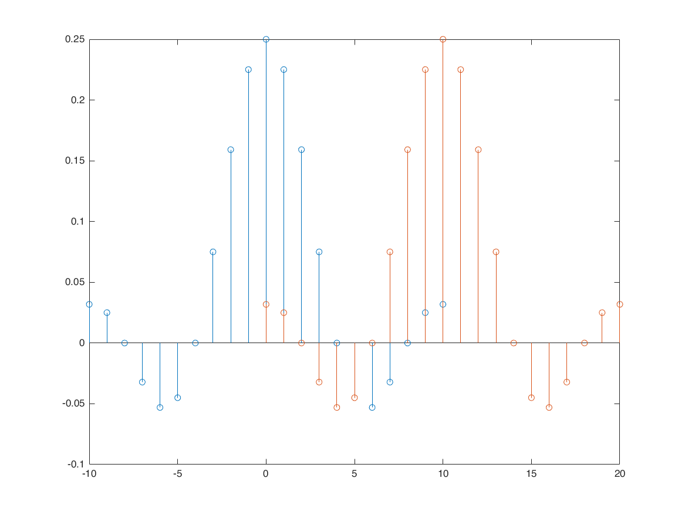
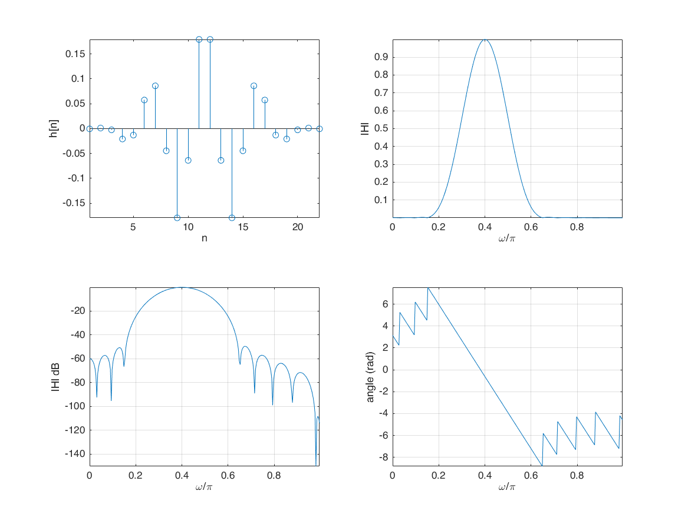

Contents
time domain representation of Ideal Frequency Selective Filter (IFF)
OmegaC = pi/4;
n1 = -50:50;
h = OmegaC/pi*sinc(OmegaC*n1/pi);
stem(n1,h);
axis tight

Non Ideal Frequency Selective Filter (NFF)
o = -4*pi:0.01:4*pi;
H = (1+2*cos(o))/3;
figure
subplot(2,1,1);
plot(o,abs(H) );
subplot(2,1,2);
plot(o,angle(H) );
o = -4*pi:0.01:4*pi;
H = exp(-1i*o/2)*1i.*(sin(o/2));
figure
subplot(2,1,1);
plot(o,abs(H) );
subplot(2,1,2);
plot(o,angle(H) );
moving average
o = 0:0.01:1*pi;
M = 16;
N = 16;
H = 1/(N+M+1)*exp(1i*o*(N-M)/2).*sin(o*(M+N+1)/2)./sin(o/2);
figure
subplot(2,1,1);
plot(o,20*log10(abs(H)) ); axis tight;
subplot(2,1,2);
plot(o,angle(H) ); axis tight;
figure
[M,N] = deal(16);
H = 1/(N+M+1)*exp(1i*o*(N-M)/2).*sin(o*(M+N+1)/2)./sin(o/2);
plot(o,20*log10(abs(H)) ); hold on;
[M,N] = deal(32);
H = 1/(N+M+1)*exp(1i*o*(N-M)/2).*sin(o*(M+N+1)/2)./sin(o/2);
plot(o,20*log10(abs(H)) ); hold on;
[M,N] = deal(64);
H = 1/(N+M+1)*exp(1i*o*(N-M)/2).*sin(o*(M+N+1)/2)./sin(o/2);
plot(o,20*log10(abs(H)) ); hold on;
MA with different weights b_k
n1 = -100:100;
h = 2/33*sinc(2*n1/33);
idx = find(abs(n1)>32);
h(idx)=0;
figure;stem(n1,h)
M = 500;
k = -M:M;
w = (pi/M)*k;
H = h*(exp(-1i*pi/M)).^(n1'*k);
U = fftshift(fft(h,1001));
[M,N] = deal(16);
H2 = 1/(N+M+1)*exp(1i*w*(N-M)/2).*sin(w*(M+N+1)/2)./sin(w/2);
figure;
plot(w,20*log10(abs(H)),'b'); xlim([-pi/4,pi/4]); hold on;
plot(w,20*log10(abs(H2)),'r');
plot(w,20*log10(abs(U)),'g');
windows (filters)
L = 64;
w1 = kaiser(L,0);
w2 = bartlett(L);
w3 = hamming(L);
w4 = kaiser(L,20);
w5 = hanning(L);
wvtool(w1,w2,w3,w4,w5);
Warning: Cannot set Position while WindowStyle is 'docked'
effect of the windows - box
n1 = -10:10;
h = sin(pi*n1/4)./(pi*n1); h(isnan(h))=0.25;
figure
stem(n1,h); hold on;
[h,n1] = sigshift(h,n1,10);
stem(n1,h);
[H,W] = freqz(h,1,265);
figure
subplot(2,2,1)
stem(n1,h); grid on; axis tight;
subplot(2,2,2);
plot(W/pi, abs(H)); grid on; axis tight;
subplot(2,2,3);
plot(W/pi, 20*log10(abs(H))); grid on; axis tight;
subplot(2,2,4);
plot(W/pi, unwrap(angle(H))); grid on; axis tight;

effect of kasier window
hw = h.*kaiser(21,5)';
[HW, W] = freqz(hw,1,265);
subplot(2,2,1); hold on;
stem(n1,hw); grid on; axis tight;
subplot(2,2,2); hold on;
plot(W/pi, abs(HW)); grid on; axis tight;
subplot(2,2,3); hold on;
plot(W/pi, 20*log10(abs(HW))); grid on; axis tight;
subplot(2,2,4); hold on;
plot(W/pi, unwrap(angle(HW))); grid on; axis tight;
effect of hamming window
hw = h.*hamming(21)';
[HW, W] = freqz(hw,1,265);
subplot(2,2,1); hold on;
stem(n1,hw); grid on; axis tight;
subplot(2,2,2); hold on;
plot(W/pi, abs(HW)); grid on; axis tight;
subplot(2,2,3); hold on;
plot(W/pi, 20*log10(abs(HW))); grid on; axis tight;
subplot(2,2,4); hold on;
plot(W/pi, unwrap(angle(HW))); grid on; axis tight;
apply filters to signal
nx = 0:1023;
s = (1-(nx-500).^2/4).*exp(-(nx-500).^2/2/4);
n = -10:1:10;
h = sin(pi*n/4)./(pi*n); h(isnan(h))=0.25;
[y,ny] = conv_m(s,nx,h,n);
figure
subplot(2,1,1)
plot(nx,s,'b'); axis tight; xlim([460,540]); hold on;
plot(ny,y,'r');
subplot(2,1,2);
sf = fft(s,1024);
plot(linspace(0,pi,length(sf)/2), ...
abs(sf(1:length(sf)/2)), 'b'); hold on;
sf1 = fft(y,1024);
plot(linspace(0,pi,length(sf1)/2), ...
abs(sf1(1:length(sf1)/2)), 'r');
continue ( apply filters to signal )
[h,n] = sigshift(h,n,10);
[y,ny] = conv_m(s,nx,h,n);
subplot(2,1,1)
plot(ny,y,'k');
subplot(2,1,2);
sf1 = fft(y,1024);
plot(linspace(0,pi,length(sf1)/2), ...
abs(sf1(1:length(sf1)/2)), 'k');
continue (apply filters to signal)
hw = h.*kaiser(21,5)';
[y,ny] = conv_m(s,nx,hw,n);
subplot(2,1,1);
plot(ny,y,'g--');
subplot(2,1,2);
sf1 = fft(y,1024);
plot(linspace(0,pi,length(sf1)/2), ...
abs(sf1(1:length(sf1)/2)), 'g--');
use fir function
M = 21;
wc = 0.1;
wo = 0.4;
wind = 4;
nx = 0:1023;
s = (1-(nx-500).^2/4).*exp(-(nx-500).^2/2/4);
[b] = fir(M,wc,wo,wind);
nb = 0:length(b)-1;
[y,ny] = conv_m(s,nx,b,nb);
figure
subplot(2,1,1)
plot(nx,s,'b'); axis tight; xlim([460,540]); hold on;
plot(ny,y,'r');
subplot(2,1,2);
sf = fft(s,1024);
plot(linspace(0,pi,length(sf)/2), ...
abs(sf(1:length(sf)/2)), 'b'); hold on;
sf1 = fft(y,1024);
plot(linspace(0,pi,length(sf1)/2), ...
abs(sf1(1:length(sf1)/2)), 'r');
****** kasier window *******


fir1, fir2, firpm (Parks-McClellan optimal equiripple FIR filter design)
f = [0 0.1 0.25 0.75 0.9 1];
a = [0 0 1 1 0 0];
bpm = firpm(25, f, a);
[H,W] = freqz(bpm,1,256);
figure
subplot(2,2,1)
stem(bpm); xlabel('n'); ylabel('h[n]'); axis tight;
subplot(2,2,2)
plot(f,a,'k'); hold on;
plot(W/pi,abs(H),'r'); xlabel('\omega/\pi'); ylabel('|H|'); grid on; axis tight;
subplot(2,2,3)
plot(W/pi,20*log10(abs(H))); xlabel('\omega/\pi'); ylabel('|H| dB'); grid on; axis tight;
subplot(2,2,4)
plot(W/pi, unwrap(angle(H))); xlabel('\omega/\pi'); ylabel('angle (rad)'); grid on; axis tight;
firpm (Parks-McClellan optimal equiripple FIR filter design)
f = [0 0.37 0.43 1];
a = [1 1 0 0];
bpm = firpm(42, f, a);
[H,W] = freqz(bpm,1,256);
figure
subplot(2,2,1); hold on;
stem(bpm); xlabel('n'); ylabel('h[n]'); axis tight;
subplot(2,2,2); hold on;
plot(W/pi,abs(H)); xlabel('\omega/\pi'); ylabel('|H|'); grid on; axis tight;
subplot(2,2,3); hold on;
plot(W/pi,20*log10(abs(H))); xlabel('\omega/\pi'); ylabel('|H| dB'); grid on; axis tight;
subplot(2,2,4); hold on;
plot(W/pi, unwrap(angle(H))); xlabel('\omega/\pi'); ylabel('angle (rad)'); grid on; axis tight;
bpm = firpm(82, f, a);
[H,W] = freqz(bpm,1,256);
subplot(2,2,1);
stem(bpm); xlabel('n'); ylabel('h[n]'); axis tight;
subplot(2,2,2)
plot(W/pi,abs(H)); xlabel('\omega/\pi'); ylabel('|H|'); grid on; axis tight;
subplot(2,2,3);
plot(W/pi,20*log10(abs(H))); xlabel('\omega/\pi'); ylabel('|H| dB'); grid on; axis tight;
subplot(2,2,4);
plot(W/pi, unwrap(angle(H))); xlabel('\omega/\pi'); ylabel('angle (rad)'); grid on; axis tight;
firgr (Generalized Remez FIR filter design)
br = firgr(42, [0 0.37 0.43 1], [1 1 0 0], [1 10], 'minphase');
[H,W] = freqz(br,1,256);
subplot(2,2,1);
stem(br); xlabel('n'); ylabel('h[n]'); axis tight;
subplot(2,2,2);
plot(W/pi,abs(H)); xlabel('\omega/\pi'); ylabel('|H|'); grid on; axis tight;
subplot(2,2,3);
plot(W/pi,20*log10(abs(H))); xlabel('\omega/\pi'); ylabel('|H| dB'); grid on; axis tight;
subplot(2,2,4);
plot(W/pi, unwrap(angle(H))); xlabel('\omega/\pi'); ylabel('angle (rad)'); grid on; axis tight;
firls (Linear-phase FIR filter design using least-squares error minimization)
br = firls(42, [0 0.37 0.43 1], [1 1 0 0]);
[H,W] = freqz(br,1,256);
subplot(2,2,1);
stem(br); xlabel('n'); ylabel('h[n]'); axis tight;
subplot(2,2,2);
plot(W/pi,abs(H)); xlabel('\omega/\pi'); ylabel('|H|'); grid on; axis tight;
subplot(2,2,3);
plot(W/pi,20*log10(abs(H))); xlabel('\omega/\pi'); ylabel('|H| dB'); grid on; axis tight;
subplot(2,2,4);
plot(W/pi, unwrap(angle(H))); xlabel('\omega/\pi'); ylabel('angle (rad)'); grid on; axis tight;